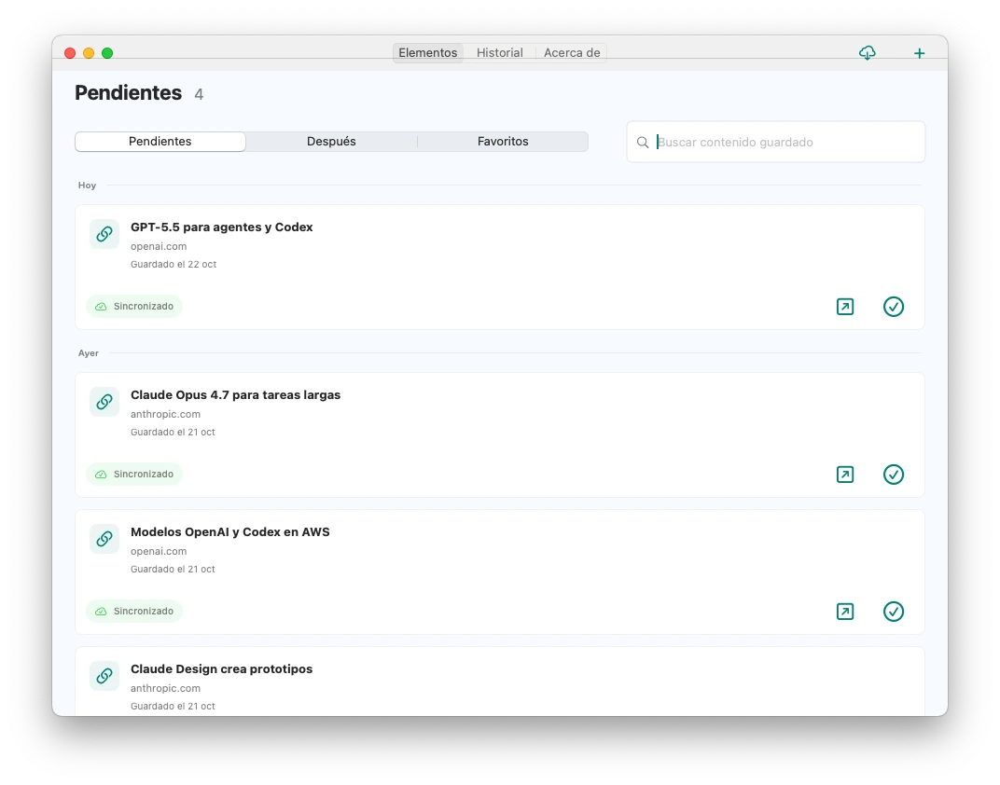
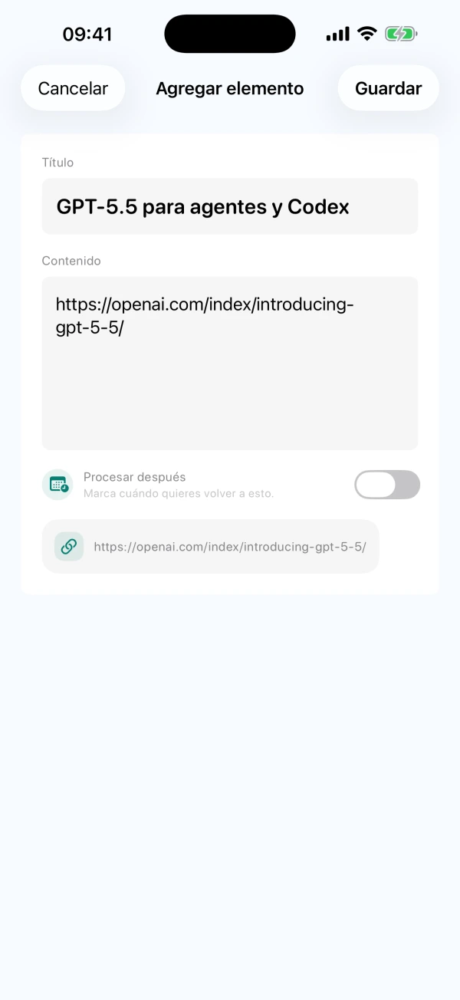
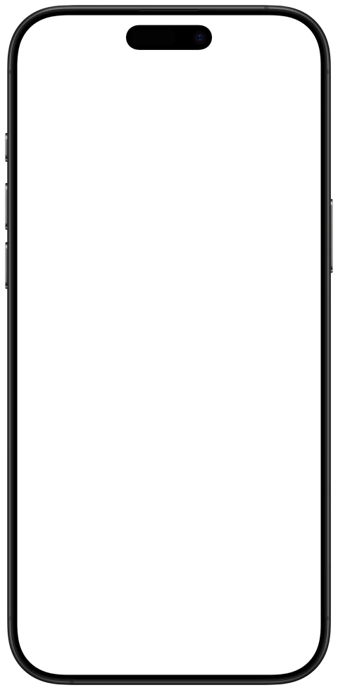
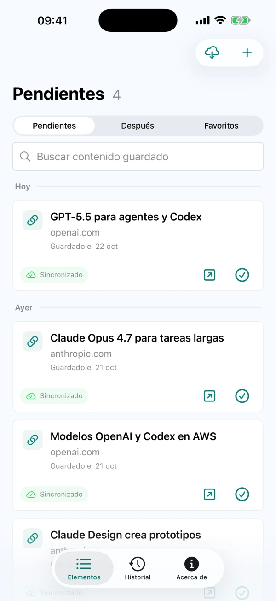

Una publicación durante el trayecto
Comparte una publicación útil desde una app social compatible. Abre su fuente en Mac cuando puedas revisar los detalles.
Guarda enlaces, textos e imágenes desde Compartir en iPhone o iPad. Retómalos en Mac para revisar, investigar y dar seguimiento.
Obtén CarryOver para iPhone, iPad y Mac en App Store.



iPhoneiPadMac
Envía enlaces, publicaciones e ideas a CarryOver
Los pendientes permanecen en tu bandeja

Abre la fuente, investiga y da seguimiento antes de terminar
CarryOver es una bandeja para lo que quieres retomar después en iPhone, iPad y Mac. Guarda una publicación, una referencia o una idea mientras navegas y vuelve en Mac cuando tengas tiempo de revisar, investigar y darle seguimiento.
Comparte una publicación útil desde una app social compatible. Abre su fuente en Mac cuando puedas revisar los detalles.
Guarda en Safari un enlace por investigar, un anuncio de IA o una referencia de diseño. Agrega lo importante a favoritos y búscalo por su título, texto o URL guardados.
Anota la idea manualmente y programa un recordatorio. Retómala cuando tengas tiempo y márcala como lista cuando termines.
Guarda textos, enlaces o imágenes compatibles desde el menú Compartir de otras apps. También puedes escribir una idea en CarryOver.
Los elementos sin completar permanecen en tu bandeja sin importar su antigüedad. Márcalos como listos cuando realmente los hayas atendido.
En iPhone, iPad y Mac, busca por título, texto y URL de origen, tanto en pendientes como en el historial.
Los elementos completados pasan al historial. Restáuralos a pendientes cuando necesites retomarlos.
Elige fecha y hora y permite las notificaciones del sistema. Toca el recordatorio para abrir el elemento guardado.
iCloud sincroniza iPhone, iPad y Mac con la misma cuenta de Apple. La red y el estado de iCloud pueden retrasar la sincronización.
Guarda los textos, enlaces o imágenes que la app de origen realmente comparte. Una publicación social puede compartirse como enlace y no con todo su contenido. Los enlaces web abren la página original, no una copia completa sin conexión; podría requerirse Internet o iniciar sesión.
Los elementos se guardan primero en el dispositivo. La sincronización requiere la misma Cuenta de Apple, iCloud activado y conexión a Internet. Revisa el estado y vuelve a intentarlo si hace falta; no se garantiza que sea inmediata.
La versión actual no tiene límite diario ni requiere una actualización Pro por separado. Consulta la disponibilidad y el precio de tu región en App Store. Leer ayuda